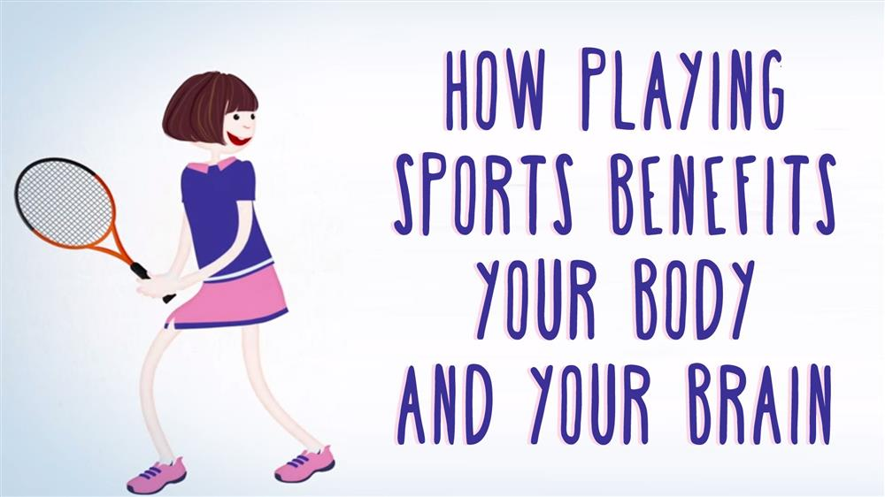

The victory of the underdog over the favored team. The last minute penalty shot that wins the tournament. The high-energy training montages. Many people love to glorify victory on the playing field, cheer for favorite teams, and play sports. But here's a question: Should we be so obsessed with sports? Is playing sports actually as good for us as we make it out to be, or just a fun and entertaining pastime? What does science have to say? First of all, it's well accepted that exercise is good for our bodies and minds, and that's definitely true.
Exercising, especially when we're young, has all sorts of health benefits, like strengthening our bones, clearing out bad cholesterol from our arteries, and decreasing the risk of stroke, high blood pressure, and diabetes. Our brains also release a number of chemicals when we workout, including endorphins. These natural hormones, which control pain and pleasure responses in the cental nervous system, can lead to feelings of euphoria, or, what's often called, a runner's high. Increased endorphins and consistent physical activity in general can sharpen your focus and improve your mood and memory. So does that mean we get just as much benefit going to the gym five days a week as we would joining a team and competing? Well, here's where it gets interesting: because it turns out that if you can find a sport and a team you like, studies show that there are all sorts of benefits that go beyond the physical and mental benefits of exercise alone.
Some of the most significant are psychological benefits, both in the short and long term. Some of those come from the communal experience of being on a team, for instance, learning to trust and depend on others, to accept help, to give help, and to work together towards a common goal. In addition, commitment to a team and doing something fun can also make it easier to establish a regular habit of exercise. School sport participation has also been shown to reduce the risk of suffering from depression for up to four years. Meanwhile, your self-esteem and confidence can get a big boost.
There are a few reasons for that. One is found in training. Just by working and working at skills, especially with a good coach, you reinforce a growth mindset within yourself. That's when you say, "Even if I can't do something today, I can improve myself through practice and achieve it eventually." That mindset is useful in all walks of life. And then there's learning through failure, one of the most transformative, long-term benefits of playing sports. The experience of coming to terms with defeat can build the resilience and self-awareness necessary to manage academic, social, and physical hurdles. So even if your team isn't winning all the time, or at all, there's a real benefit to your experience. Now, not everyone will enjoy every sport. Perhaps one team is too competitive, or not competitive enough. It can also take time to find a sport that plays to your strengths. That's completely okay. But if you spend some time looking, you'll be able to find a sport that fits your individual needs, and if you do, there are so many benefits. You'll be a part of a supportive community, you'll be building your confidence, you'll be exercising your body, and you'll be nurturing your mind, not to mention having fun.